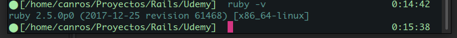

Created domingo 23 diciembre 2018
Verificar la versión de Ruby Actual
Utilizando el comando ruby -v

Comandos de Rails
#Ejecución del server de Rails
Si se ejecuta desde C9.io debe usarse este comando.
rails s -b $IP -p $PORT
Si se ejecuta en local puede usarse este comando
rails s
rails server